Mục tiêu học tập
Học xong Chương 3, bạn cần làm được từng việc dưới đây. Nhãn cho biết nội dung nằm ở mục nào.
- 3.0Định nghĩa khoáng vật.
- 3.1.1Mô tả cấu tạo cơ bản của nguyên tử.
- 3.1.2Rút ra thông tin cơ bản về nguyên tử từ Bảng tuần hoàn các nguyên tố hóa học.
- 3.1.3Mô tả các liên kết hóa học liên quan đến khoáng vật.
- 3.2Mô tả các con đường chính hình thành khoáng vật.
- 3.3Mô tả tứ diện silic-oxy và cách nó tạo nên các khoáng vật silicat phổ biến.
- 3.4Kể tên các khoáng vật phi silicat phổ biến thuộc nhóm oxit, sulfua, sulfat và carbonat.
- 3.5Nhận dạng khoáng vật bằng tính chất vật lý và bảng tra cứu.
Cách dùng tài liệu này
Các từ gạch chân là thuật ngữ chính. Nhấn vào một từ, hoặc mở Thuật ngữ ở góc dưới bên phải, để đọc và tìm mọi định nghĩa của chương. Các sơ đồ động sẽ đứng yên nếu thiết bị của bạn bật chế độ giảm chuyển động.
3.0Khoáng vật là gì?
"Khoáng chất" ghi trên nhãn dinh dưỡng hay hộp thuốc không phải là khoáng vật theo nghĩa địa chất. Định nghĩa địa chất cổ điển gồm năm điều kiện:
Ngoại lệ. Nước và thủy ngân ở thể lỏng tại nhiệt độ phòng nhưng vẫn được xem là khoáng vật vì chúng được phân loại trước khi quy tắc nhiệt độ phòng ra đời. Canxit thường do sinh vật tạo ra nhưng vẫn được tính vì phân bố rộng và quan trọng về mặt địa chất. Để khắc phục những điểm không nhất quán này, Hiệp hội Khoáng vật học Quốc tế (IMA) đã sửa đổi định nghĩa:
Vì vậy canxit trong vỏ một con nghêu còn sống không phải là khoáng vật, nhưng khi vỏ bị chôn vùi và biến đổi qua (diagenesis) hay các quá trình địa chất khác thì nó trở thành khoáng vật. Các chất tự nhiên không thỏa định nghĩa, như than đá, ngọc trai, opal và obsidian, được gọi là (mineraloid).
là vật chất chứa một hay nhiều khoáng vật hoặc á khoáng vật. Ba loại đá (học ở các chương sau) là đá magma (kết tinh từ vật chất nóng chảy), đá trầm tích (gồm sản phẩm của phong hóa cơ học, như cát, sỏi, và phong hóa hóa học, như các chất kết tủa từ dung dịch) và đá biến chất (đá khác bị biến đổi bởi nhiệt và áp suất).

3.1Hóa học khoáng vật
Đá được cấu tạo từ khoáng vật, và mỗi khoáng vật có thành phần hóa học xác định. Để hiểu hóa học đó, ta bắt đầu từ đơn vị cơ bản của mọi vật chất: nguyên tử.
3.1.1 Nguyên tử
Nguyên tử gồm ba loại hạt hạ nguyên tử. ở trung tâm chứa (mang điện dương) và (không mang điện). Bao quanh là đám mây mang điện âm; trong nguyên tử trung hòa, số electron bằng số proton. Proton và neutron mỗi hạt có số khối 1, còn khối lượng electron chưa bằng 1/1000 số đó, nên gần như toàn bộ khối lượng nguyên tử nằm ở hạt nhân.
3.1.2 Bảng tuần hoàn các nguyên tố hóa học
là loại nguyên tử có số proton xác định, gọi là (oxy có 8, sắt có 26). Nguyên tố không thể bị phân tách bằng phương pháp hóa học thành dạng đơn giản hơn và giữ tính chất hóa học, vật lý riêng. liệt kê mọi nguyên tố đã biết theo thứ tự số hiệu nguyên tử; Dmitri Mendeleev lập bảng đầu tiên năm 1869. Mỗi ô ghi ký hiệu hóa học (thường bắt nguồn từ tên Latinh hay Hy Lạp), tên, số hiệu nguyên tử và (proton + neutron, vì electron rất nhẹ).
Đồng vị. Nguyên tử khối trên bảng tuần hoàn thường không phải số nguyên vì đó là giá trị trung bình của các nguyên tử có số neutron khác nhau. là các dạng của một nguyên tố có cùng số proton nhưng khác số neutron. Với cacbon, 98,9% nguyên tử là cacbon-12 (6 proton, 6 neutron); một ít là cacbon-13 (7 neutron); một lượng vết là cacbon-14 (8 neutron).
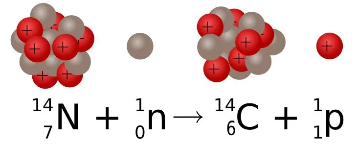
Trong 118 nguyên tố đã biết, các nguyên tố nặng nhất là sản phẩm nhân tạo tồn tại rất ngắn; nguyên tố tự nhiên nặng nhất là urani (số hiệu 92). Chỉ tám nguyên tố tạo nên gần như toàn bộ vỏ lục địa, và đó chính là các nguyên tố có trong những khoáng vật tạo đá phổ biến.
| Nguyên tố | Ký hiệu | Hàm lượng |
|---|---|---|
| Oxy | O | |
| Silic | Si | |
| Nhôm | Al | |
| Sắt | Fe | |
| Canxi | Ca | |
| Natri | Na | |
| Kali | K | |
| Magie | Mg |
3.1.3 Liên kết hóa học
Phần lớn vật chất trên Trái Đất là của nhiều nguyên tố. mô tả cách các nguyên tử gắn với nhau để tạo hợp chất, vd. natri và clo tạo NaCl (muối ăn). Hợp chất được giữ bởi liên kết hóa học gọi là . Chỉ số dưới cho biết số nguyên tử: O2 là hai nguyên tử oxy, còn nước (H2O) là hai hydro liên kết cộng hóa trị với một oxy.
Phần lớn khoáng vật cũng là hợp chất. Canxit, CaCO3, gồm một canxi, một cacbon và ba oxy. Cacbon và ba oxy liên kết cộng hóa trị thành một mang điện âm, ion carbonat (CO32−), hút ion canxi (Ca2+). Trong olivin, (Mg,Fe)2SiO4, dấu phẩy nghĩa là Mg và Fe có thể chiếm cùng một vị trí trong tinh thể và thay thế cho nhau.
Hóa trị và điện tích
Electron nằm trong các lớp vỏ ứng với các mức năng lượng khác nhau. Lớp ngoài cùng là , và electron của nó tham gia liên kết. Năm 1913, Niels Bohr cho rằng nguyên tử bền hơn khi lớp ngoài cùng đầy, nên phần lớn nguyên tử nhận thêm hoặc nhường bớt electron để làm đầy lớp này. Trong mô hình Bohr, lớp thứ nhất chứa tối đa 2 electron, lớp thứ hai và thứ ba chứa tối đa 8: đó là (octet; với hydro và heli là lớp thứ nhất đầy 2 electron).
- Cột I và II có 1 và 2 electron hóa trị và dễ nhường chúng. Natri (hàng 3, cột I: lớp vỏ 2-8-1) mất electron hóa trị duy nhất, còn 11 proton và 10 electron: thành ion có điện tích +1. Các nguyên tố cột II thành ion +2.
- Cột VI và VII có 6 và 7 electron hóa trị và dễ nhận thêm electron, nên thường liên kết với các nguyên tố cột I và II.
- Cột VIII (18) gồm các . Lớp hóa trị của chúng đã đầy (heli có 2), nên chúng trơ về mặt hóa học và không liên kết.
Nguyên tử mang điện tích do nhận hoặc mất electron gọi là . Các nguyên tố bên trái bảng mất electron và thành dương (bị hút về cực âm, cathode, trong thiết bị điện); các nguyên tố bên phải nhận electron và thành âm (bị hút về cực dương, anode). Các nguyên tố ở giữa bảng không tuân thủ quy tắc bát tử một cách nhất quán; đó là các . Ví dụ điển hình là sắt: Fe3+ (dạng oxy hóa) thường làm đá có màu đỏ, còn Fe2+ (dạng khử) thường cho màu lục.

Liên kết ion
(liên kết chuyển electron) hình thành nhờ lực hút tĩnh điện giữa các ion trái dấu: một nguyên tử chuyển electron cho nguyên tử kia để cả hai có lớp hóa trị đầy đủ. Một Na+ và một Cl− tạo natri clorua, NaCl: khoáng vật halit, muối ăn (Hình 3.6). Một Ca2+ và hai Cl− tạo canxi clorua, CaCl2. Liên kết ion thường hình thành giữa một kim loại và một phi kim.
Liên kết cộng hóa trị
(liên kết dùng chung electron) thường gặp giữa các phi kim, chúng dùng chung electron để làm đầy lớp hóa trị. Oxy có 6 electron hóa trị; hai nguyên tử oxy dùng chung 2 electron để tạo O2. Trong metan (CH4), cacbon cần 4 electron và mỗi hydro cần 1, nên mỗi hydro dùng chung electron của mình với cacbon.
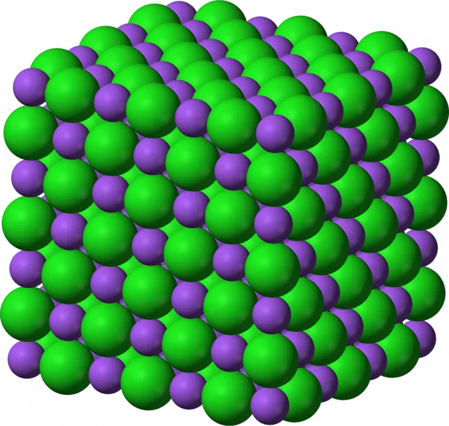

Tự kiểm tra: Bài kiểm tra mục 3.1 trong giáo trình (tiếng Anh) ↗
3.2Sự hình thành khoáng vật
Khoáng vật hình thành khi các nguyên tử liên kết với nhau theo một trật tự tinh thể. Trong tự nhiên có ba con đường chính:
3.2.1 Kết tủa từ dung dịch nước
gồm các ion hay phân tử () hòa tan trong một , trong tự nhiên thường là nước. Khi halit tan, các ion Na+ và Cl− tách ra và phân tán. là quá trình ngược lại: các ion trong dung dịch kết hợp thành khoáng vật rắn. Quá trình này phụ thuộc vào nồng độ ion, nhiệt độ và áp suất. Thời điểm dung môi không thể hòa tan thêm chất tan là . Kết tủa có thể xảy ra khi dung dịch nguội đi, khi dung môi bay hơi hoặc khi điều kiện hóa học thay đổi. Ở nhà, đó là lớp cặn khoáng trên vòi nước, vòi sen và ly uống nước.
- ở Utah hình thành nơi các mạch suối giàu khoáng chảy vào hồ Bonneville thời kỳ băng hà. Nay lộ ra ở các thung lũng khô, loại đá xốp này từng được những người khai hoang dùng làm vật liệu cách nhiệt tự nhiên cho nhà ở.
- Các bậc travertin ở Mammoth Hot Springs, Yellowstone, hình thành do canxit kết tủa ở rìa các ao nông được suối cấp nước.
- Hồ Great Salt Lake mặn gần gấp tám lần đại dương. Sông suối mang ion muối vào, hồ không có lối thoát, nước bốc hơi làm nồng độ tăng đến bão hòa và khoáng vật kết tủa thành trầm tích. Hồ Mono (California) và Biển Chết cũng tương tự.

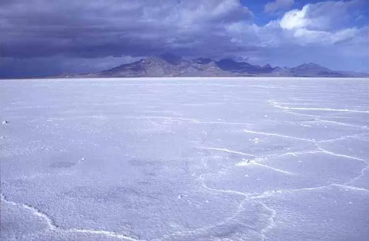
3.2.2 Kết tinh từ macma
Nhiệt là năng lượng làm nguyên tử dao động; nhiệt độ đo cường độ của dao động đó. Khi dao động đủ mạnh, liên kết hóa học bị phá vỡ, tinh thể nóng chảy và giải phóng ion vào khối nóng chảy. là đá nóng chảy với các ion chuyển động tự do. Khi macma xâm nhập ở dưới sâu hoặc phun trào lên bề mặt (lúc đó gọi là ), nó nguội đi và các tinh thể khoáng vật có thể hình thành.

3.2.3 Kết tủa do sinh vật
Nhiều sinh vật tạo xương, vỏ và lớp bao bọc cơ thể bằng cách lấy ion từ nước và kết tủa khoáng vật. Phổ biến nhất là canxit (CaCO3), thường được kết tủa dưới dạng của nó là aragonit (các dạng đa hình có cùng công thức hóa học nhưng khác cấu trúc tinh thể).
- San hô và nghêu tạo vỏ aragonit hoặc canxit. Sau khi chết, phần cứng tích tụ dưới đáy biển và có thể thành đá vôi. Đá vôi có thể hình thành không cần sinh vật, nhưng phần lớn hình thành theo cách này.
- Trùng phóng xạ (radiolaria), một loại động vật phù du, tạo vỏ silica cực nhỏ có thể tích tụ thành đá chert (đá silic).
- Xương chủ yếu là một dạng apatit (nhóm phosphat) gọi là apatit hydroxycarbonat.
Ghi nhớ
Theo định nghĩa của IMA, các chất sinh học này chưa phải là khoáng vật cho đến khi sinh vật chết và phần cứng của nó trở thành hóa thạch.
Tự kiểm tra: Bài kiểm tra mục 3.2 trong giáo trình (tiếng Anh) ↗
3.3Khoáng vật silicat
Khoáng vật được phân nhóm theo thành phần và cấu trúc. , nhóm lớn nhất trên Trái Đất, chiếm phần lớn manti và vỏ Trái Đất. Trong gần 4.000 khoáng vật đã biết, đa số hiếm gặp; chỉ một số ít, gọi là , tạo nên hầu hết các loại đá ta thường gặp.
Silicat được xây dựng quanh (SiO4): một ion silic nhỏ (+4) ở tâm của bốn ion oxy lớn (mỗi ion −2) ở bốn đỉnh của một hình chóp bốn mặt. Silic dùng chung một electron hóa trị với mỗi oxy bằng liên kết cộng hóa trị. Vì mỗi oxy chỉ dùng chung một nửa số electron hóa trị, tứ diện mang điện tích −4 và các đỉnh của nó vẫn còn hoạt động hóa học: chúng liên kết với tứ diện khác hoặc với cation như Al3+, Fe2+,3+, Mg2+, K+, Na+ và Ca2+.
Tùy các yếu tố như thành phần hóa học ban đầu của macma, các tứ diện có thể đứng riêng lẻ hoặc nối thành chuỗi, tấm hay khung ba chiều. Các tứ diện nối nhau là , liên kết cộng hóa trị qua các oxy ở đỉnh. Cation lấp vào khoảng trống trong mỗi cấu trúc, tạo nên các nhóm silicat khác nhau.
3.3.1 Các silicat sắt-magie sẫm màu: họ olivin
Olivin, (Fe,Mg)2SiO4, là khoáng vật chính của đá manti như peridotit và có trong bazan. Khi chưa phong hóa, olivin có màu lục đặc trưng. Sắt và magie tạo thành : các nguyên tố có tính chất tương tự (ở đây, gần cùng kích thước và điện tích) thay thế tự do cho nhau ở cùng một vị trí trong tinh thể. Vì vậy olivin là một họ khoáng vật, một dãy thành phần giữa hai (end member): forsterit toàn magie và fayalit toàn sắt. Tỉ lệ Fe và Mg trong macma mẹ quyết định khoáng vật nào trong dãy được hình thành. Các nguyên tố hiếm hơn, như mangan, có thể thay thế với lượng nhỏ; những sự thay thế như vậy tạo nên sự đa dạng lớn của khoáng vật và thường làm thay đổi màu sắc cùng các tính chất khác.
Olivin chủ yếu gồm Si, O, Fe và Mg nên là khoáng vật (ferromagnesian; ferro = sắt, magnesian = magie) hay sẫm màu. Silicat sắt-magie thường đặc hơn silicat không chứa sắt-magie. Điều này quan trọng với kiến tạo mảng: một mảng có hút chìm hay không phụ thuộc phần lớn vào tỉ trọng của đá, mà tỉ trọng đá lại phụ thuộc tỉ trọng các khoáng vật tạo nên nó.
Cấu trúc của olivin gồm các tứ diện độc lập, gọi là (nesosilicate, orthosilicate); granat, topaz, kyanit và zircon cũng thuộc nhóm này. Hai cấu trúc gần giống dẫn dần sang nhóm pyroxen: (sorosilicate), trong đó hai tứ diện dùng chung một oxy (vd. epidot màu xanh hạt dẻ cười), và (cyclosilicate), gồm các vòng tứ diện (vd. beryl, ngọc lục bảo, aquamarin, turmalin).

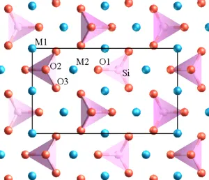
3.3.2 Họ pyroxen
là khoáng vật sắt-magie sẫm màu, thường đen hoặc lục sẫm, cấu tạo từ chuỗi đơn các tứ diện, mỗi tứ diện dùng chung hai oxy ở đỉnh. Các cation kim loại liên kết các chuỗi với nhau. Pyroxen có trong đá magma mafic (peridotit, bazan, gabro) và đá biến chất (eclogit, đá phiến lam). Một đại diện phổ biến là augit, (Ca,Na)(Mg,Fe,Al,Ti)(Si,Al)2O6.
Công thức chung là XZ(Al,Si)2O6, với X = Na, Ca, Mg hoặc Fe và Z = Mg, Fe hoặc Al. Các ion này có kích thước gần nhau nên có thể thay thế nhiều kiểu, nhưng điện tích vẫn phải cân bằng: nếu Na+ thay Ca2+ thì phải có sự thay thế khác trong tinh thể bù lại. Kích thước ion quan trọng hơn điện tích ion đối với sự thay thế trong dãy dung dịch rắn.
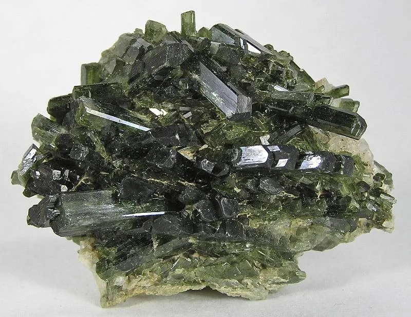
3.3.3 Họ amphibol
được cấu tạo từ chuỗi kép: hai chuỗi kiểu pyroxen nối với nhau bằng cách dùng chung oxy thứ ba của mỗi tứ diện. Chúng được gọi là (inosilicate). Amphibol có trong đá magma và đá biến chất, thường có dạng quen tấm dài. Loại phổ biến nhất, hornblend, thường màu đen nhưng amphibol có nhiều màu. Chúng có trong gabro, bazan và diorit, thường tạo thành các đốm đen trong granit, và cấu tạo nên đá biến chất amphibolit.
Công thức rất phức tạp, thường viết (RSi4O11)2, trong đó R đại diện cho nhiều cation khác nhau. Amphibol cũng có thể chứa ion hydroxit (OH−), lấy từ nước hòa tan trong macma khi tinh thể phát triển.
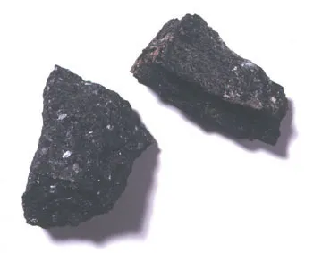
3.3.4 Silicat lớp
Trong (silicat tấm, phyllosilicate), mỗi tứ diện dùng chung cả ba oxy ở đáy, tạo thành các tấm với đỉnh trên tự do để liên kết với nguyên tử khác. Tỉ lệ Si:O là 2:5 (Si4O10). Các loại phổ biến là mica và khoáng vật sét.
- chủ yếu gồm silica, nhôm và kali, có trong đá magma và đá biến chất. Biotit sẫm màu (nhiều Fe và Mg hơn, nên thuộc nhóm sắt-magie) phổ biến trong granit; muscovit sáng màu là khoáng vật , có trong đá phiến kết tinh (schist).
- Trong mica, các tấm tứ diện kẹp một lớp bát diện chứa Fe, Mg hoặc Al. Ion kali nằm giữa các "bánh kẹp" giữ chúng lại bằng yếu, nên mica dễ tách thành tấm dọc theo các lớp kali.
- là alumosilicat ngậm nước hình thành do phong hóa, quan trọng trong đá trầm tích. Kaolinit giống bánh mì kẹp hở một mặt: một tấm silica ("bánh mì") với một lớp bát diện nhôm ("nhân phết").
- Các silicat lớp khác: serpentin và clorit, trong đá biến chất.
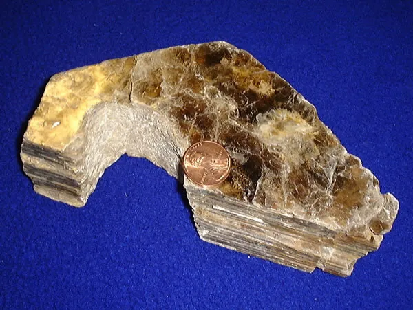

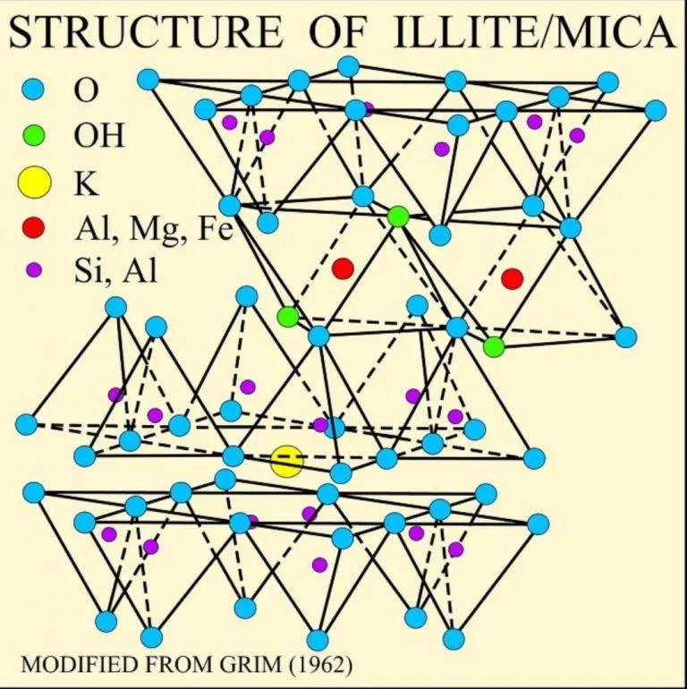
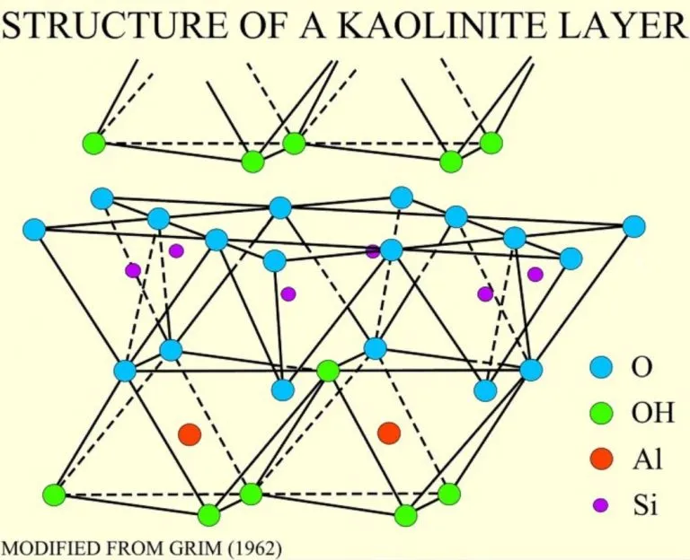
3.3.5 Silicat khung
Thạch anh và fenspat là hai khoáng vật phổ biến nhất trong vỏ lục địa. Trong các (tectosilicate) này, cả bốn oxy ở đỉnh đều được dùng chung, tạo khung ba chiều. Fenspat là khoáng vật phổ biến nhất trong vỏ Trái Đất, chiếm khoảng 50%. Thạch anh là khoáng vật phổ biến nhất trên bề mặt Trái Đất vì bền với phong hóa; nó đặc biệt nhiều trong (gồm các hạt phong hóa cơ học như cát, sỏi).
- Thạch anh là silica tinh khiết, SiO2. Tạp chất tạo nên các biến thể như thạch anh tím (amethyst), thạch anh hồng và thạch anh vàng (citrin).
- (fenspat kali, K-spar), KAlSi3O8, phổ biến trong đá felsic của vỏ lục địa. Thạch anh và orthoclas là khoáng vật felsic (giàu silica; từ này ghép từ feldspar và silica).
- , (Ca,Na)AlSi3O8, là dung dịch rắn từ albit giàu natri đến anortit giàu canxi, phổ biến trong đá mafic của vỏ đại dương.
Vì sao có hai họ fenspat? Ion kali lớn hơn nhiều so với ion natri và canxi (hai ion này có kích thước gần nhau). Mạng tinh thể không thể chứa cả hai loại, nên fenspat chia thành orthoclas (K) và plagioclas (Na/Ca). Silicat khung còn gồm fenspatoit và zeolit.


| Cấu trúc | Nhóm | Ví dụ | Ghi chú |
|---|---|---|---|
| Tứ diện riêng lẻ | Silicat đảo | Olivin, granat, topaz, kyanit, zircon | Olivin: dung dịch rắn Fe–Mg; mafic, đặc, màu lục |
| Cặp / vòng | Silicat đảo kép / silicat vòng | Epidot / beryl, turmalin | Chuyển tiếp sang các silicat chuỗi |
| Chuỗi đơn | Pyroxen | Augit, diopsit | Sẫm màu, mafic; XZ(Al,Si)2O6 |
| Chuỗi kép | Amphibol | Hornblend, tremolit | Sẫm màu; dạng tấm dài; có thể chứa OH− |
| Tấm | Silicat lớp | Biotit, muscovit, kaolinit, serpentin, clorit | Si:O = 2:5; tách thành tấm |
| Khung ba chiều | Silicat khung | Thạch anh, orthoclas, plagioclas | Phổ biến nhất trong vỏ lục địa |
Tự kiểm tra: Bài kiểm tra mục 3.3 trong giáo trình (tiếng Anh) ↗
3.4Khoáng vật phi silicat
Cấu trúc tinh thể của không chứa tứ diện silica. Nhiều khoáng vật trong số này có giá trị kinh tế: cung cấp kim loại (đồng, chì, sắt) và sản phẩm phi kim (muối, vật liệu xây dựng, phân bón).
| Nhóm | Ví dụ | Công thức | Công dụng |
|---|---|---|---|
| Nguyên tố tự sinh | vàng, bạc, đồng | Au, Ag, Cu | Trang sức, tiền xu, công nghiệp |
| Carbonat | canxit, dolomit | CaCO3, CaMg(CO3)2 | Vôi, xi măng Portland |
| Oxit | hematit, magnetit, bauxit | Fe2O3, Fe3O4, hỗn hợp oxit nhôm | Quặng sắt và nhôm, chất màu |
| Halogenua | halit, sylvin | NaCl, KCl | Muối ăn, phân bón |
| Sulfua | galenit, chalcopyrit, thần sa (cinnabar) | PbS, CuFeS2, HgS | Quặng chì, đồng, thủy ngân |
| Sulfat | thạch cao, muối Epsom | CaSO4·2H2O, MgSO4·7H2O | Tấm thạch cao, ngâm trị liệu |
| Phosphat | apatit | Ca5(PO4)3(F,Cl,OH) | Phân bón, răng, xương |
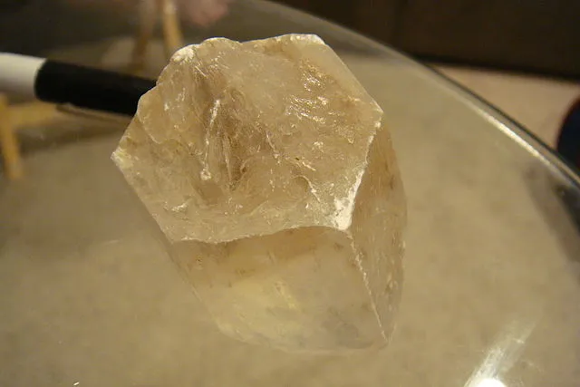
3.4.1 Carbonat
Hai khoáng vật phổ biến nhất là canxit (CaCO3) và dolomit (CaMg(CO3)2), chủ yếu có trong các đá trầm tích đá vôi và đá dolomit. Một số carbonat hình thành do bay hơi và kết tủa, nhưng phần lớn đá giàu carbonat, như đá vôi, hình thành do (đá hóa) xác sinh vật biển hóa thạch: vỏ và bộ khung canxi carbonat của chúng tích tụ sau khi chết, phần mềm phân hủy, còn phần cứng trở thành đá vôi. Đa số đá vôi được tạo từ các sinh vật cực nhỏ.
Muối. Nhiều khoáng vật phi silicat là , tức hợp chất tạo ra khi thay hydro trong axit tự nhiên. Axit tự nhiên phổ biến nhất là axit cacbonic (H2CO3), do CO2 hòa tan trong nước; khoáng vật carbonat thay hydro của nó bằng canxi và/hoặc magie. Sinh vật tiết ra canxit và dạng đa hình aragonit từ ion bicarbonat hòa tan (HCO3−). Halit thay hydro trong axit clohydric bằng natri, còn thạch cao thay hydro trong axit sulfuric bằng canxi. Muối hình thành do bay hơi gọi là .
Lưỡng chiết. Canxit tách ánh sáng thành hai tia dao động vuông góc nhau, truyền với tốc độ và đường đi khác nhau, nên nhìn qua tinh thể trong suốt ta thấy ảnh kép. Hiện tượng này là lý do canxit được dùng trong kính hiển vi thạch học. Canxit cũng sủi bọt trong axit clohydric loãng (Mục 3.5.6).


Trong cấu trúc canxit, mỗi cacbon liên kết cộng hóa trị với ba oxy tạo thành một đơn vị carbonat hình tam giác mang điện −2, đơn vị này liên kết ion với một ion Ca2+.


3.4.2 Oxit, halogenua và sulfua
Sau carbonat, đây là các khoáng vật phi silicat phổ biến nhất.
Oxit
là ion kim loại liên kết với oxy. Quen thuộc nhất là gỉ sắt: oxit sắt (Fe2O3) cùng các oxit ngậm nước hình thành khi sắt tiếp xúc với oxy và nước. Luyện quặng oxit sắt tạo ra sắt kim loại và CO2. Oxit sắt làm cho phần lớn đá đỏ có màu đỏ; ở Vườn quốc gia Zion và khắp miền nam Utah, cát kết đỏ là các hạt thạch anh không màu được oxit sắt bao phủ và gắn kết.
Các oxit sắt gồm limonit, magnetit và hematit. Hematit có nhiều dạng nhưng cùng công thức Fe2O3: dạng khối (không có hình dạng ngoài), dạng chùm nho (các khối tròn đồng tâm lớn), dạng gương (tinh thể kim loại sáng bóng) và dạng trứng cá (như trứng cá màu đỏ xỉn). Chương gọi các dạng này là dạng đa hình. Các oxit khác: nước đá (H2O), bauxit (oxit nhôm ngậm nước, quặng nhôm) và corindon (Al2O3, gồm cả hồng ngọc và lam ngọc).


Halogenua
là các halogen ở cột VII, thường là flo hoặc clo, liên kết ion với natri hoặc cation khác: halit (NaCl), sylvin (KCl) và fluorit (CaF2). Chúng thường hình thành do nước biển hoặc các vùng nước cô lập bốc hơi, như ở bãi muối Bonneville phía tây hồ Great Salt Lake (Hình 3.9).
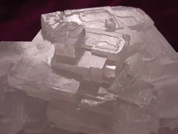
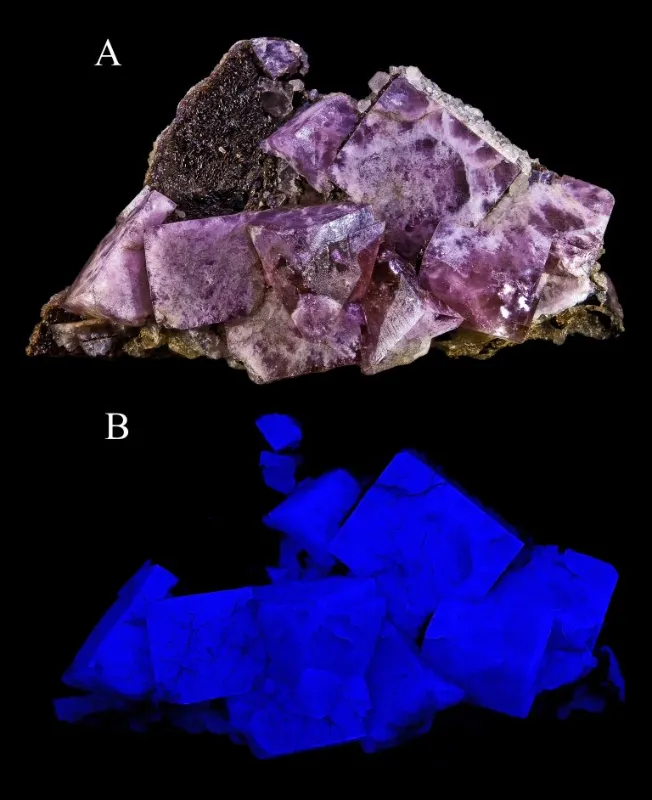
Sulfua
Trong , kim loại liên kết với lưu huỳnh. Nhiều sulfua là khoáng vật quan trọng: galenit (chì sulfua, nguồn chì chính), sphalerit (kẽm sulfua, nguồn kẽm chính), pyrit (sắt sulfua, "vàng của kẻ ngốc") và chalcopyrit (sắt-đồng sulfua, quặng đồng chính trong các mỏ porphyr như mỏ Bingham; Chương 16). Nguồn niken, antimon, molypden, asen và thủy ngân lớn nhất cũng là sulfua.
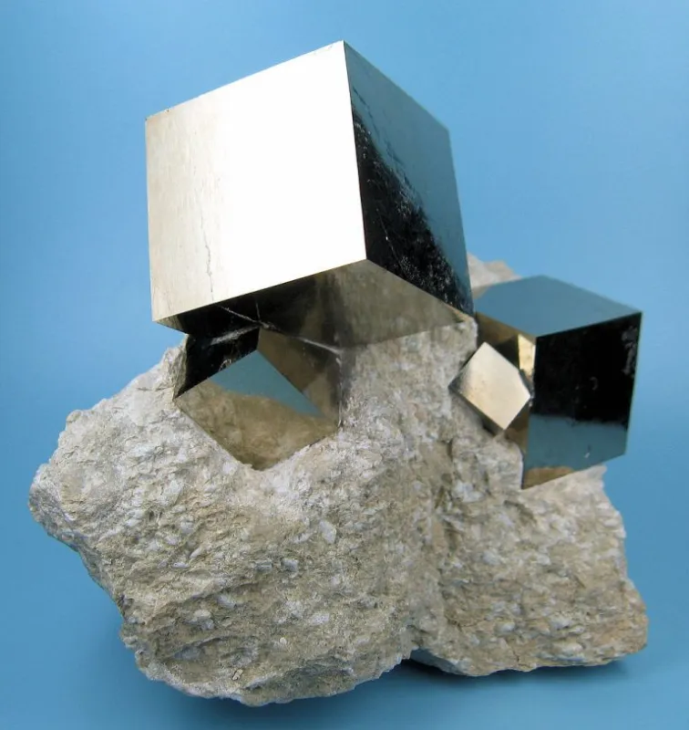
3.4.3 Sulfat
chứa một ion kim loại, như canxi, liên kết với ion sulfat (SO42−). Thạch cao (CaSO4·2H2O) được dùng làm vữa trát và tấm thạch cao, thường hình thành do nước bốc hơi, và chứa nguyên phân tử nước trong tinh thể (phần "·2H2O"). Điều này khác với amphibol, vốn chứa hydroxit (OH−), tức nước thiếu một ion hydro. Canxi sulfat không ngậm nước là một khoáng vật khác, anhydrit (CaSO4).
3.4.4 Phosphat
có đơn vị phosphat hình tứ diện (PO43−) kết hợp với các ion khác; đôi khi asen hoặc vanadi thay cho phospho. Chúng được dùng trong phân bón, chất tẩy rửa và sơn. Nổi tiếng nhất là apatit, Ca5(PO4)3(F,Cl,OH), có trong răng và xương. Đá quý ngọc lam (turquoise) là một phosphat giàu đồng, giống thạch cao ở chỗ chứa phân tử nước.
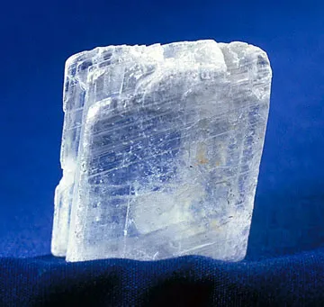

3.4.5 Khoáng vật nguyên tố tự sinh
Khoáng vật , thường là kim loại, tồn tại ở trạng thái tinh khiết hoặc gần tinh khiết. Vàng kém hoạt động và hiếm khi liên kết với nguyên tố khác. Cacbon tồn tại tự sinh dưới dạng graphit và kim cương. Các nguyên tố hoạt động vừa phải như bạc, đồng, platin, thủy ngân và lưu huỳnh đôi khi ở dạng tự sinh, còn các kim loại hoạt động mạnh như sắt, chì và nhôm hầu như luôn liên kết với nguyên tố khác.
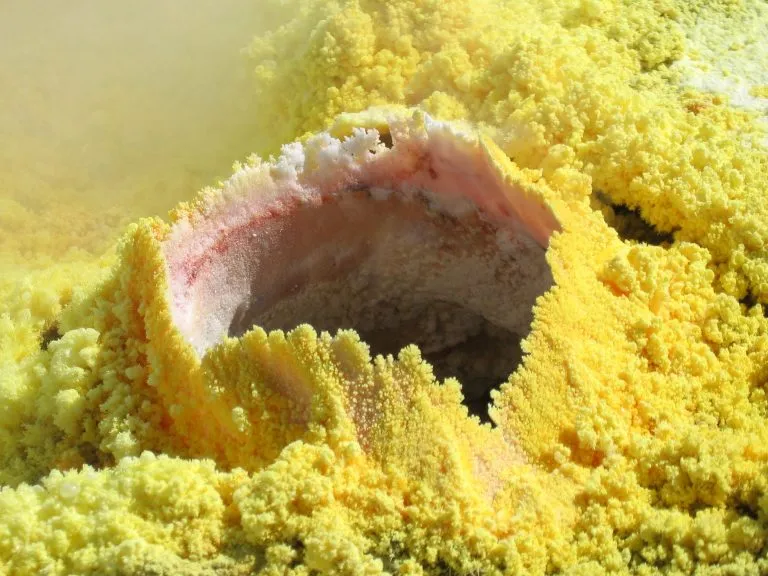
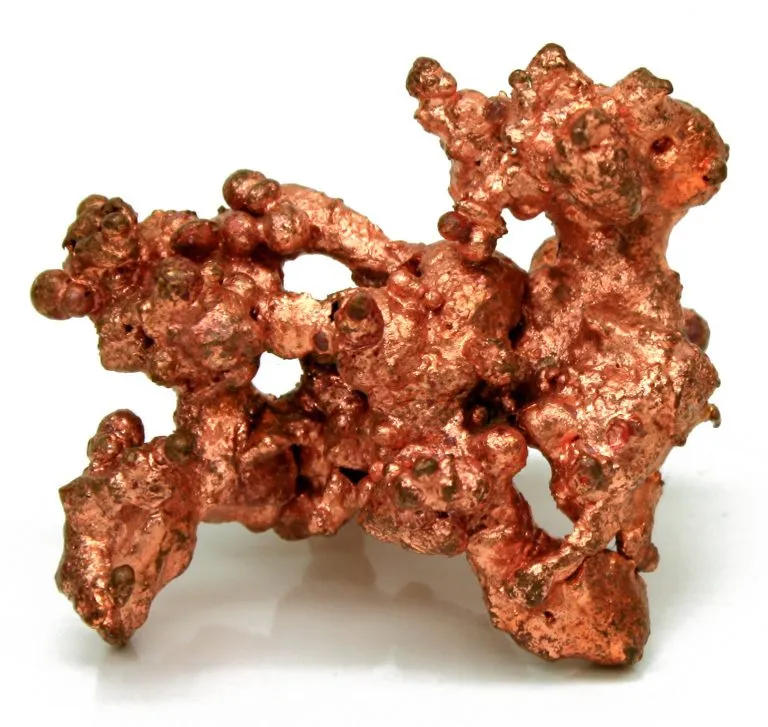
Tự kiểm tra: Bài kiểm tra mục 3.4 trong giáo trình (tiếng Anh) ↗
3.5Nhận dạng khoáng vật
Nhà địa chất nhận dạng khoáng vật qua tính chất vật lý, có thể thử ngoài thực địa mà không cần thiết bị hiện đại: ánh và màu, vết vạch, độ cứng, dạng quen tinh thể, cát khai và vết vỡ, cùng một số tính chất đặc biệt. Phần lớn đá gồm vài khoáng vật phổ biến dưới dạng hạt nhỏ, nên hãy nghĩ xem tính chất nào vẫn dùng được với một hạt nhỏ nằm giữa các khoáng vật khác.
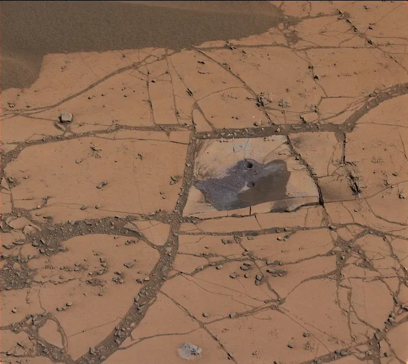
3.5.1 Ánh và màu
(luster) mô tả vẻ ngoài bề mặt khoáng vật. Ánh kim trông như kim loại sáng bóng (crom, thép, bạc, vàng); ánh bán kim mờ hơn, như thiếc pewter. Ánh phi kim không giống kim loại và vẫn có thể sáng, nhưng theo kiểu khác với kim loại.
 Ánh kimmolybdenit
Ánh kimmolybdenit Ánh bán kimsphalerit
Ánh bán kimsphalerit Ánh thủy tinhthạch anh
Ánh thủy tinhthạch anh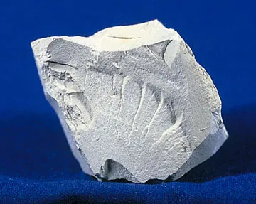
Ánh đất (mờ)kaolin Ánh tơthạch cao
Ánh tơthạch cao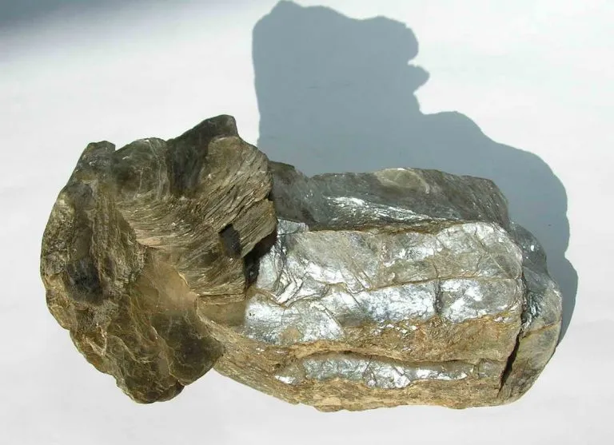
Ánh xà cừmica
| Ánh | Trông giống |
|---|---|
| Thủy tinh | Sáng bóng như thủy tinh |
| Đất / mờ | Mờ, như bùn khô hay đất sét |
| Tơ | Ánh dịu như vải lụa |
| Xà cừ | Như mặt trong vỏ nghêu (xà cừ) |
| Bán kim | Kim loại mờ, như thiếc pewter. Thường vẫn được xếp vào ánh kim; có thể do khoáng vật ánh kim bị phong hóa. |
Màu có thể hữu ích nhưng thường thay đổi trong cùng một họ khoáng vật. Màu phụ thuộc vào các nguyên tố chính và tạp chất, như mangan, titan, crom hay liti, thậm chí phân tử nước (làm thạch anh vốn trong suốt trở nên trắng đục). Một số khoáng vật chủ yếu có một màu: đồng làm malachit lục và azurit lam. Số khác, như fenspat, có nhiều màu (hồng, trắng, lục, xám) do dung dịch rắn. Trừ vài ngoại lệ đáng chú ý, màu không phải tính chất quyết định; vết vạch đáng tin cậy hơn.
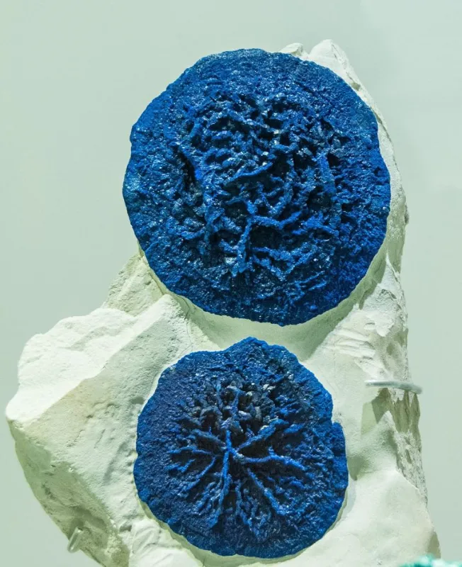

3.5.2 Vết vạch
là màu của bột khoáng vật, tạo bằng cách cạ khoáng vật lên tấm sứ không tráng men (với một số khoáng vật, trang sổ ghi chép thực địa cũng dùng được). Khoáng vật cứng hơn tấm sứ sẽ làm xước tấm sứ thay vì để lại vết; khi đó hãy dùng búa nghiền thành bột rồi miết lên tấm. Vết vạch ổn định hơn màu bề mặt:
- Hematit trông từ màu bạc ánh kim đến nâu đỏ dạng đất, nhưng vết vạch luôn nâu đỏ.
- Pyrit có màu vàng đồng thau ánh kim, nhưng vết vạch đen đến đen ánh lục.
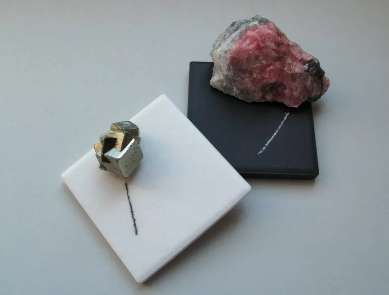
3.5.3 Độ cứng
là khả năng của khoáng vật làm xước vật khác. , mang tên nhà địa chất người Đức Friedrich Mohs, xếp hạng khả năng chống xước so với mười khoáng vật chuẩn, từ 1 đến 10. Độ cứng do độ bền liên kết nguyên tử quyết định. Thang này không tuyến tính: kim cương (10) cứng gấp khoảng bốn lần corindon (9). Lưỡi dao thép bỏ túi (5,5) là ranh giới thường dùng giữa khoáng vật cứng và mềm trong các khóa tra cứu.

Độ cứng của bộ dụng cụ thử
- Móng tay: 2,5
- Đồng xu bằng đồng: 3,5
- Dao / tấm kính: 5,5
- Đinh thép: 6,5
- Mũi khoan bê tông: 8,5
Giá trị lấy từ áp phích ở Hình 3.44.
| Độ cứng | Khoáng vật | Độ cứng | Khoáng vật |
|---|---|---|---|
| 1 | Talc | 6 | Orthoclas |
| 2 | Thạch cao | 7 | Thạch anh |
| 3 | Canxit | 8 | Topaz |
| 4 | Fluorit | 9 | Corindon |
| 5 | Apatit | 10 | Kim cương |
3.5.4 Dạng quen tinh thể
(crystal habit) là hình dạng điển hình mà tinh thể khoáng vật phát triển và biểu hiện. Hình dạng phản ánh cách sắp xếp nguyên tử bên trong (sắp xếp lập phương cho tinh thể lập phương), nhưng sự chèn ép của khoáng vật khác có thể làm thay đổi nó:
- (euhedral): hình dạng hoàn chỉnh, không bị cản trở, có các mặt tinh thể (phát triển tự do).
- (subhedral): hình dạng hoàn chỉnh một phần.
- (anhedral): bị cản trở nên không phát triển được dạng quen điển hình.
Một số khoáng vật, như granat, vẫn phát triển mặt tinh thể dù bị tinh thể khác bao quanh. Một số tạo tinh thể quá nhỏ để thấy dạng quen bằng mắt thường. Số khác, như pyrit, có nhiều dạng quen (lập phương, mười hai mặt, tám mặt, dạng khối).
| Dạng quen | Mô tả | Ví dụ |
|---|---|---|
| Dạng tấm dài (bladed) | Dài và dẹt | kyanit, amphibol, thạch cao |
| Dạng chùm nho / vú | Khối tròn, dạng bướu | hematit, malachit, smithsonit |
| Lớp phủ / lá mỏng / tinh đám (druse) | Tinh thể nhỏ phủ trên bề mặt | thạch anh, canxit, malachit, azurit |
| Lập phương | Hình khối vuông | pyrit, galenit, halit |
| Mười hai mặt | Khối 12 mặt | granat, pyrit |
| Dạng cành cây | Phân nhánh | oxit Mn, đồng, vàng |
| Đẳng thước | Không có phương kéo dài | olivin, granat, pyroxen |
| Dạng sợi | Mảnh, rất dài | serpentin, amphibol, zeolit |
| Dạng lớp / tấm | Các tấm rất mỏng, dẹt, xếp chồng | mica (biotit, muscovit) |
| Dạng thấu kính / phiến | Như tấm mỏng | hoa hồng selenit, wulfenit, canxit |
| Lục giác | Sáu cạnh | thạch anh, hanksit, corindon |
| Dạng khối / hạt | Không có hình dạng rõ; tinh thể cực nhỏ | limonit, pyrit, azurit, bornit |
| Tám mặt | Hai hình chóp bốn mặt ghép đáy | kim cương, fluorit, magnetit, pyrit |
| Lăng trụ / dạng cột | Rất dài, dạng cột | turmalin, beryl, barit |
| Tỏa tia | Mọc từ một điểm rồi tỏa ra | "mặt trời" pyrit, pyrophyllit |
| Mặt thoi | Như khối lập phương bị xô lệch | canxit, dolomit |
| Dạng bản / khối / ngắn | Cạnh sắc, không có phương kéo dài | fenspat, pyroxen, canxit |
| Tứ diện | Hình chóp ba mặt | magnetit, spinel, tetrahedrit |
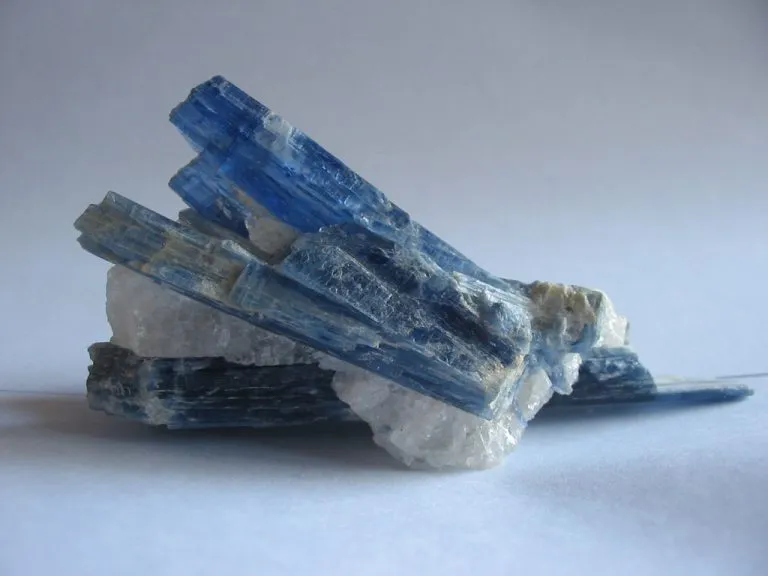
Tấm dàikyanit- Chùm nhomalachit
 Lập phươnggalenit
Lập phươnggalenit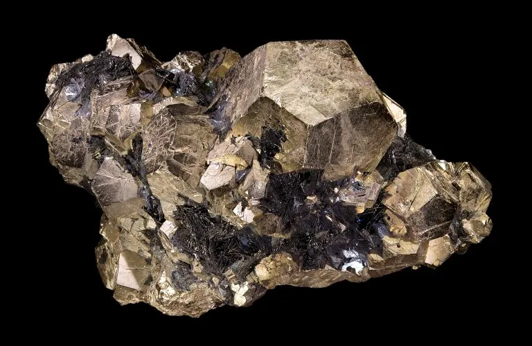
Mười hai mặtpyrit Cành câyoxit Mn
Cành câyoxit Mn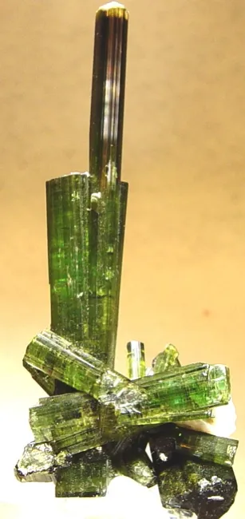
Lăng trụturmalin- Lục giácthạch anh
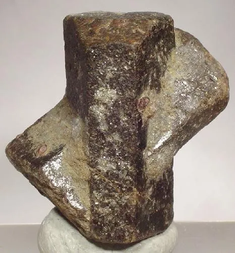
Song tinhstaurolit
Đường sọc và song tinh. (striations) là các vạch sáng tối song song trên mặt tinh thể. xảy ra khi cấu trúc tinh thể lặp lại theo kiểu đối xứng gương dọc theo một số phương. Hai hiện tượng liên quan với nhau ở plagioclas: song tinh tạo đường sọc trên một trong hai mặt cát khai của nó (Mục 3.5.6).
3.5.5 Cát khai và vết vỡ
là xu hướng vỡ theo các mặt phẳng nhẵn, song song, nơi liên kết nguyên tử yếu hơn theo một số phương. Vì đi theo các lớp nguyên tử, mặt cát khai nhẵn về quang học và phản chiếu ánh sáng, kể cả khi vết vỡ trông lởm chởm: chúng có thể hiện thành chuỗi bậc như ruộng bậc thang cùng lóe sáng dưới một góc mặt trời, hoặc như các vết nứt song song ăn vào tinh thể. Graphit cho thấy lý do: liên kết mạnh trong các lớp cacbon và liên kết rất yếu giữa các lớp giúp nó tách và trượt, nên dùng làm chất bôi trơn.
Cát khai được mô tả bằng mức độ (hoàn toàn, không hoàn toàn hoặc không có), số phương và góc giữa các phương. Đây là một trong những tính chất nhận dạng hữu ích nhất. Đừng nhầm mặt cát khai với mặt tinh thể: đập đá để lộ bề mặt mới thường làm tinh thể vỡ theo mặt cát khai, và một số mặt cát khai song song với mặt tinh thể nhưng nhiều mặt thì không.
| Khoáng vật | Cát khai |
|---|---|
| Thạch anh | Không có (vết vỡ vỏ sò) |
| Olivin | Không có (vết vỡ vỏ sò) |
| Mica | 1 phương hoàn toàn |
| Fenspat | 2 phương hoàn toàn, góc 90° |
| Pyroxen | 2 phương không hoàn toàn, góc 90° |
| Amphibol | 2 phương hoàn toàn, góc 60°/120° |
| Canxit | 3 phương hoàn toàn, góc khoảng 75° (khối mặt thoi: khối lập phương bị ép lệch về một góc) |
| Halit, galenit, pyrit | 3 phương hoàn toàn, góc 90° (lập phương) |
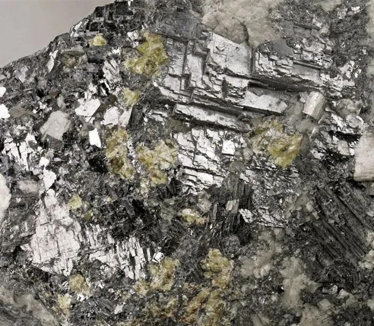
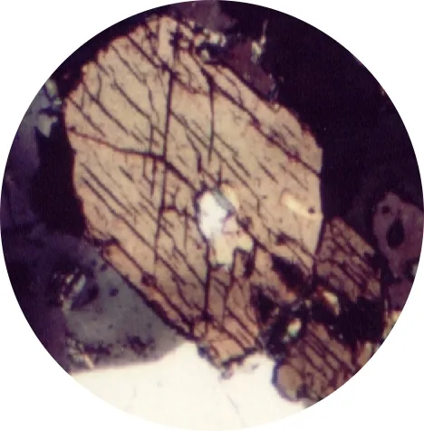
là kiểu vỡ không theo cát khai. Nó có thể không đều (được mô tả là gồ ghề, dạng mảnh vụn hay dạng sợi) hoặc dạng : bề mặt cong, nhẵn như một cái bát nông hay vỏ ốc, thường có các gờ cong. Thạch anh và olivin hiếm khi có cát khai và thường vỡ dạng vỏ sò, giống như thủy tinh núi lửa obsidian.

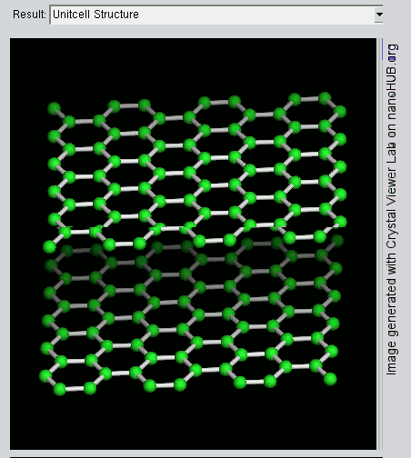
3.5.6 Tính chất đặc biệt
là những đặc điểm riêng giúp nhận dạng một số khoáng vật hoặc khiến chúng hữu dụng.
- Dẫn quang dạng sợi: ulexit chiếu ảnh xuyên qua tinh thể như một màn hình.
- Vị: halit (NaCl) có vị mặn; sylvin (KCl) đắng hơn.
- : khối lượng mẫu so với khối lượng của cùng thể tích nước. Cân mẫu theo gam, nhúng vào ống đong chia vạch và đọc thể tích nước dâng lên; vì nước nặng 1 g/cm³, tỉ số cho ra tỷ trọng. Đo trong phòng thí nghiệm thì dễ nhưng ít hữu ích ngoài thực địa, trừ khoáng vật rất đặc như galenit và vàng, mà nhà địa chất đánh giá bằng (heft): mẫu cầm thấy nặng thế nào so với kích thước.
- Phản ứng với axit: canxit sủi bọt trong axit clohydric loãng; dolomit chỉ sủi bọt chậm, và chỉ khi đã nghiền bột (Hình 3.51). Nhà địa chất làm việc với đá carbonat mang theo lọ nhỏ giọt HCl loãng. Giấm (axit axetic, yếu hơn) cũng dùng được nhưng sủi ít hơn.
- Từ tính: magnetit (Fe3O4) bị nam châm hút mạnh và có thể bị từ hóa; oxit sắt có từ tính tự nhiên gọi là đá nam châm (lodestone). Ilmenit (FeTiO3) và một số hematit có từ tính yếu.
- : ánh sáng bị tán xạ tạo hiệu ứng nhiều màu, như ở labradorit (một biến thể của plagioclas), opal, ngọc trai và vỏ sò.
- Đường sọc và phiến tách: giúp phân biệt hai loại fenspat. Plagioclas có đường sọc trên một mặt cát khai do song tinh (góc cát khai của nó lệch nhẹ khỏi 90°, nên các đới song tinh phản xạ ánh sáng ở góc hơi khác nhau). Fenspat kali không có đường sọc nhưng có thể có (exsolution lamellae, perthit): các vệt gần song song của fenspat natri (albit) tách ra vì Na và K không cùng nằm được trong một cấu trúc fenspat.
- : một số khoáng vật, hoặc nguyên tố vết trong chúng, phát ánh sáng nhìn thấy dưới tia cực tím (đèn đen) (Hình 3.33). Hiếm hơn là : hấp thụ ánh sáng rồi phát ra chậm, như miếng dán dạ quang.
 Chiếu ảnhulexit
Chiếu ảnhulexit Tỷ trọng caovàng tự sinh
Tỷ trọng caovàng tự sinh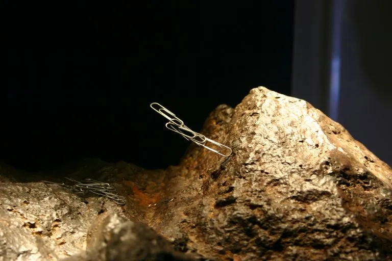
Từ tínhđá nam châm (magnetit) Ánh ngũ sắc, đường sọcplagioclas
Ánh ngũ sắc, đường sọcplagioclas Phiến táchfenspat kali
Phiến táchfenspat kali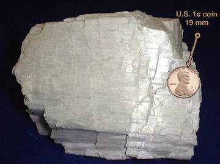
Bậc cát khaiwollastonit
Tự kiểm tra: Bài kiểm tra mục 3.5 trong giáo trình (tiếng Anh) ↗
Tóm tắt
Khoáng vật là những viên gạch xây nên đá, và tính chất của chúng do liên kết nguyên tử quyết định. Phần lớn khoáng vật bắt đầu từ một chất lưu: kết tinh từ macma đang nguội hoặc kết tủa từ dung dịch bão hòa. Silicat là nhóm lớn nhất cả về số loại lẫn khối lượng, chiếm phần lớn vỏ và manti; cấu trúc tứ diện của chúng phản ánh việc oxy và silic là hai nguyên tố phổ biến nhất trong vỏ Trái Đất. Khoáng vật phi silicat có giá trị kinh tế lớn, cung cấp vật liệu xây dựng và sản xuất. Khoáng vật được nhận dạng qua tính chất vật lý: ánh, màu, vết vạch, độ cứng, dạng quen tinh thể, vết vỡ, cát khai và các tính chất đặc biệt.
Tóm lược nhanh
- Khoáng vật: tự nhiên, vô cơ, rắn, kết tinh, thành phần xác định; IMA: "hình thành do kết quả của các quá trình địa chất". Than đá, ngọc trai, opal, obsidian là á khoáng vật.
- Nguyên tử: hạt nhân (proton +, neutron 0) và electron (−). Số hiệu nguyên tử = số proton; nguyên tử khối ≈ proton + neutron; đồng vị khác nhau ở số neutron.
- Quy tắc bát tử: cột I–II nhường electron (cation), VI–VII nhận electron (anion), VIII trơ. Liên kết ion chuyển electron (NaCl); liên kết cộng hóa trị dùng chung electron (CH4).
- Khoáng vật hình thành từ nước (kết tủa khi bão hòa), từ macma (kết tinh) và do sinh vật (canxit, aragonit, silica, apatit).
- Tứ diện SiO4 (−4) liên kết thành: riêng lẻ (olivin) → chuỗi đơn (pyroxen) → chuỗi kép (amphibol) → tấm (mica, sét) → khung (thạch anh, fenspat).
- Dung dịch rắn: olivin (forsterit–fayalit), plagioclas (albit–anortit). Kích thước quan trọng hơn điện tích.
- Phi silicat: carbonat, oxit, halogenua, sulfua, sulfat, phosphat, nguyên tố tự sinh; nhiều loại là quặng.
- Nhận dạng: ánh, màu, vết vạch, độ cứng (Mohs 1–10), dạng quen, cát khai/vết vỡ, tính chất đặc biệt (axit, từ tính, vị, tỷ trọng, huỳnh quang...).
Tự kiểm tra: Bài ôn tập Chương 3 trong giáo trình (tiếng Anh) ↗
Tài liệu tham khảo
Ghi chú kiểm chứng
Mọi nội dung trong tài liệu đã được đối chiếu với chương trong giáo trình. Khi chương khác với tài liệu tham khảo hiện hành hoặc tự mâu thuẫn, tài liệu giữ giá trị của chương (đó là nội dung bạn sẽ được kiểm tra) trừ khi có ghi chú, và liệt kê điểm khác biệt ở đây.
| Chủ đề | Chương viết | Ghi chú |
|---|---|---|
| Thang Mohs | Do "Fredrick Mohs xây dựng đầu thế kỷ 20" | Friedrich Mohs (1773–1839) đưa ra thang này năm 1812, tức đầu thế kỷ 19 (Britannica, "Mohs hardness"). Tài liệu chỉ ghi tên ông. |
| Định nghĩa khoáng vật | IMA sửa định nghĩa "năm 1985" | Câu trích dẫn lấy từ bài báo năm 1995 của E.H. Nickel, "The definition of a mineral" (Canadian Mineralogist 33: 689–690), là chuẩn của ủy ban IMA. Tài liệu không ghi năm. |
| Nguyên tố chuyển tiếp | "Các cột 3 đến 15" | Tài liệu hóa học thường định nghĩa nguyên tố chuyển tiếp là cột 3–12 (khối d). Hình 3.3 tô cột 3–12 là chuyển tiếp và 13–15 là chủ yếu cộng hóa trị, khớp với một câu khác của chương rằng các cột 3–15 thường liên kết cộng hóa trị. |
| Mafic | "Ghép từ ký hiệu hóa học Ma và Fe" | Mafic ghép từ magnesium + ferric (sắt); ký hiệu của magie là Mg. |
| Silicat chuỗi | Chỉ nêu ở phần amphibol | Cả silicat chuỗi đơn (pyroxen) và chuỗi kép (amphibol) đều là silicat chuỗi (inosilicate). Hình 3.12 ghi nhãn amphibol như trong chương. |
| Nguyên tố tự nhiên nặng nhất | Urani (92) | Đúng theo quy ước thông dụng; một lượng vết plutoni cũng hình thành tự nhiên trong quặng urani. |
| Ánh ngũ sắc của kim cương | "Kim cương đã cắt mài có ánh ngũ sắc" | Giới ngọc học gọi các tia cầu vồng của kim cương đã cắt mài là tán sắc ("lửa"). Tài liệu không xếp kim cương vào danh sách ánh ngũ sắc. |
| Tinh thể Naica | "39 feet (12 mét) và 55 tones" | "Tones" là lỗi đánh máy của tons (tấn). Tài liệu chỉ ghi chiều dài. |
| Lỗi đánh máy | "CaSo4·2H2O"; "baslt" | Đã sửa thành CaSO4·2H2O và basalt (bazan). |
Chương gọi các dạng khối, chùm nho, gương và trứng cá của hematit là "dạng đa hình". Dạng đa hình thường chỉ các cấu trúc tinh thể khác nhau (như canxit và aragonit); các dạng của hematit là những dạng quen khác nhau của cùng một cấu trúc. Apatit hydroxycarbonat được chương viết là Ca5(PO4)3(OH), là công thức của hydroxylapatit; tài liệu không ghi công thức.
Nguồn & trích dẫn
Nội dung tóm tắt từ An Introduction to Geology, Chương 3, © 2017 Chris Johnson, Matthew D. Affolter, Paul Inkenbrandt và Cam Mosher, theo giấy phép CC BY-NC-SA 4.0. Tài liệu này được chia sẻ theo cùng giấy phép. Hình ảnh lấy từ chương và giữ nguyên giấy phép riêng, ghi trong chú thích từng hình:
- CC BY / CC BY-SA / CC0: như ghi trong chú thích từng hình.
- Phạm vi công cộng: tác phẩm của chính phủ Hoa Kỳ (USGS, NASA, Cục Công viên Quốc gia) và các hình khác như đã ghi.
- Nguyên tử, bảng tuần hoàn, tứ diện, cấu trúc silicat, thanh dung dịch rắn, hình phác cát khai và sơ đồ phép thử axit: vẽ cho tài liệu này theo nội dung chương.